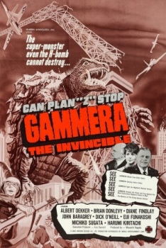

Country:United States, 86 minutes
Spoken languages:
Genres:Horror, Sci-Fi
Director(s):Noriaki Yuasa, Sandy Howard
Writer(s):Nisan Takahashi, Richard Kraft
Video Codec:Unknown
Number: 1490


Certification:
Storyline:
An atomic explosion awakens Gammera, a giant fire breathing turtle monster from his millions of years of hibernation.
Cast:

Medium: Original DVD,
Comments: Part of: Sci-Fi Classics - 50 Movies
Loaned: No
Aspect ratio: Unknown